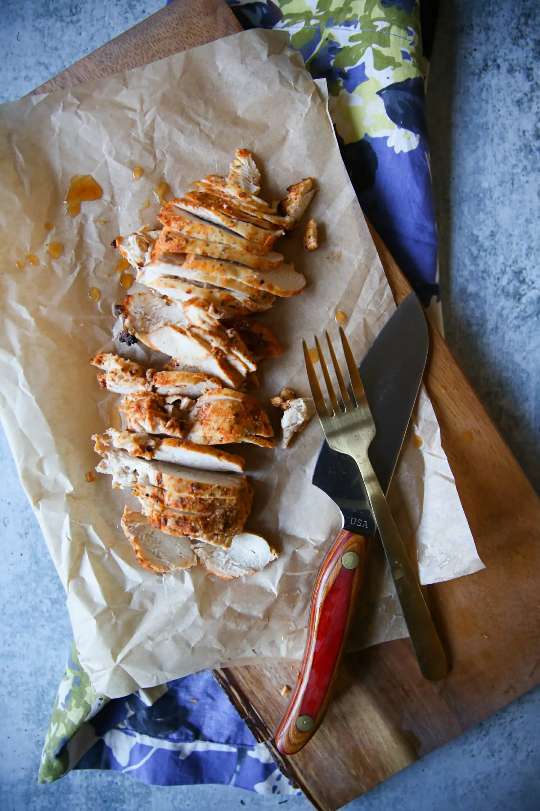

Chicken Breast Recipe | Ultimate Meal Prep Guide

Meal prepping with Chicken Breast --
Author is Kate Jones and the Prep time is 15 Minutes, Brine time is
1 hour and Cook time is 20 Minutes
SEO: Recipe for chicken breast, meal prepping and air fry
Brine -- 1 Hour
- 1 lime
- 1/4 tsp onion powder
- 1/4 tsp onion powder
Chicken -- 35 minutes
- 1 pound boneless skinless chicken breasts
- 1/4 tsp garlic powder
- 1/4 tsp black pepper
- 1/4 tsp onion powder
- 1/2 tsp salt
Step by Step
- Soak chicken with mixed onion & garlic powder and lime for 1 hour
- Mix seasoning and massage chicken breast
- Place chicken breast in air fryer
- Cook for 9 minutes at 360 fahrenheit
- Flip the chicken and cook for 9 miunutes again
Enjoy! Can be refrigerated for 7 days